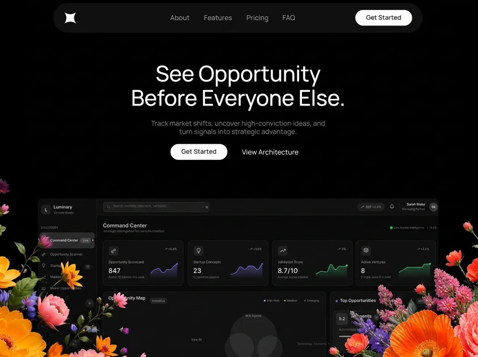

Frontier
Financefinanceyilai-ai 公开页面
收录时间：2026-08-14正文：20,778 字符

本地预览图 · jpeg
完整提示词
# PROMPT — Recreate this exact Luminary marketing landing page
Build a **single-file** dark luxury marketing landing page. No framework, no build step, no dependencies. Markup, CSS, and JS in one `index.html`. Match this spec pixel-for-pixel. Do not invent extra sections, extra copy, extra colors, or extra motion.
Visual reference: a pure-black full-viewport hero. Two huge photorealistic flower still-lifes overflow the bottom-left and bottom-right corners. A glass nav pill sits at the top. Centered white headline and grey subcopy sit in the upper-middle. A white pill CTA and a text link sit under the copy. A dark SaaS “Command Center” dashboard mock peeks up from the bottom third, cropped by the viewport, with the flowers overlapping its corners. Hovering a flower punches a soft circular spotlight that reveals a second flower image only inside that circle.
---
## 1. Canvas, scale, overflow
- Page title: `Luminary — See Opportunity Before Everyone Else`
- `html, body { height:100%; background:#000; overflow:hidden }`
- Theme color `#000000`
- Design space is a fixed artboard **1486 × 1058 px**, not a fluid document.
- Root wrapper `#stage`:
- `position:fixed; left:0; top:0; width:1486px; height:1058px; transform-origin:0 0; background:#000; overflow:hidden; will-change:transform`
- Every direct child of `#stage` is `position:absolute`
- Inner `.canvas`:
- `position:absolute; left:50%; margin-left:-743px; top:0; width:1486px; height:100%; z-index:2`
- This is the 1486-wide centered column that holds nav, hero, and dashboard. Flowers are **not** inside `.canvas`.
- Desktop layout JS (not CSS `vw` scaling):
- `DESIGN_W = 1486`, `DESIGN_H = 1058`, `MAX_EXTEND = 1.80`
- `scale = min(vw/1486, vh/1058)`
- If `vh/scale > 1058 * 1.80`, set `scale = vh / (1058 * 1.80)` so the stage never grows more than 1.8× on the tall axis
- Then `stage.width = vw/scale`, `stage.height = vh/scale`, `stage.transform = scale(scale)`
- This fills the viewport edge-to-edge with **no cropping** on the non-limiting axis
- Mobile breakpoint: `vw < 700` **or** `vw/vh < 0.82`. Then add `html.mobile`, drop the stage transform, and reflow (see §10).
- Recalc on `resize`, `orientationchange`, `visualViewport.resize`, and again after `document.fonts.ready`.
---
## 2. Font
**Manrope only.** Weights **400, 500, 600, 700**. `font-display: block` (not swap — copy must not flash). Fallback: `-apple-system, 'Segoe UI', sans-serif`.
```
body {
font-family: Manrope, -apple-system, 'Segoe UI', sans-serif;
-webkit-font-smoothing: antialiased;
text-rendering: geometricPrecision;
}
```
Load from Google Fonts as:
`https://fonts.googleapis.com/css2?family=Manrope:wght@400;500;600;700&display=block`
The original embeds those four weights as WOFF2 data-URIs. Matching Manrope cuts is required: geometric, slightly wide, no other display serif, no Inter, no Geist.
White copy is `#FFFFFF`. Subcopy is `#ADADAD`. Buttons are white fill `#FFFFFF` with label `#0A0A0A`, weight 600.
---
## 3. The four flower images — exact URLs and positions
There are **four** PNGs served through Higgsfield’s image CDN (`images.higgs.ai`, output webp, `w=1280`, `q=85`). Use these exact URLs. Do not regenerate, crop, or replace them.
### Front (always visible at rest)
**Right front** — class `.flR`
```
https://images.higgs.ai/?default=1&output=webp&url=https%3A%2F%2Fd8j0ntlcm91z4.cloudfront.net%2Fuser_38xzZboKViGWJOttwIXH07lWA1P%2Fhf_20260808_184509_216b3c39-555f-47ab-93ee-607c2840c5fa.png&w=1280&q=85
```
Source PNG: `https://d8j0ntlcm91z4.cloudfront.net/user_38xzZboKViGWJOttwIXH07lWA1P/hf_20260808_184509_216b3c39-555f-47ab-93ee-607c2840c5fa.png`
CSS:
```
.flR {
position: absolute;
display: block;
pointer-events: none; /* until entrance settles */
user-select: none;
right: -270.47px;
bottom: -134.12px;
width: 802.56px;
z-index: 3;
}
```
This is a large photorealistic floral still-life overflowing the **bottom-right**: pale / cream / dusty-pink blooms, dark background, painted-photograph look. It hangs past the right and bottom edges.
**Left front** — class `.flL`
```
https://images.higgs.ai/?default=1&output=webp&url=https%3A%2F%2Fd8j0ntlcm91z4.cloudfront.net%2Fuser_38xzZboKViGWJOttwIXH07lWA1P%2Fhf_20260808_184707_b845b0c5-652c-4284-897e-0675c11798f6.png&w=1280&q=85
```
Source PNG: `https://d8j0ntlcm91z4.cloudfront.net/user_38xzZboKViGWJOttwIXH07lWA1P/hf_20260808_184707_b845b0c5-652c-4284-897e-0675c11798f6.png`
CSS:
```
.flL {
position: absolute;
display: block;
pointer-events: none;
user-select: none;
left: -60px;
bottom: -184.56px;
width: 802.56px;
z-index: 3;
}
```
Same floral treatment, **bottom-left**, shifted slightly less off-left than the right flower is off-right, and sitting lower (`bottom: -184.56px` vs `-134.12px`).
Height is intrinsic (do not set height). Width 802.56px is the only size constraint.
### Reveal / alternate (hidden until spotlight)
These sit **under** the front images, same box, pixel-registered. `alt="" aria-hidden="true"`. At rest: `visibility: hidden`, **no mask**.
**Right reveal** — class `.flR-alt`
```
https://images.higgs.ai/?default=1&output=webp&url=https%3A%2F%2Fd8j0ntlcm91z4.cloudfront.net%2Fuser_38xzZboKViGWJOttwIXH07lWA1P%2Fhf_20260808_120734_4a9f7a44-74cd-45f5-af16-0eaa1feb7467.png&w=1280&q=85
```
Source PNG: `https://d8j0ntlcm91z4.cloudfront.net/user_38xzZboKViGWJOttwIXH07lWA1P/hf_20260808_120734_4a9f7a44-74cd-45f5-af16-0eaa1feb7467.png`
Geometry **identical** to `.flR`: `right:-270.47px; bottom:-134.12px; width:802.56px; z-index:3`
**Left reveal** — class `.flL-alt`
```
https://images.higgs.ai/?default=1&output=webp&url=https%3A%2F%2Fd8j0ntlcm91z4.cloudfront.net%2Fuser_38xzZboKViGWJOttwIXH07lWA1P%2Fhf_20260808_120537_e42c2f78-97dc-421e-b04f-7d8c8299f9dc.png&w=1280&q=85
```
Source PNG: `https://d8j0ntlcm91z4.cloudfront.net/user_38xzZboKViGWJOttwIXH07lWA1P/hf_20260808_120537_e42c2f78-97dc-421e-b04f-7d8c8299f9dc.png`
Geometry **identical** to `.flL`: `left:-60px; bottom:-184.56px; width:802.56px; z-index:3`
The reveal images are the same corner compositions with a different floral / color treatment. They must overlap the front images 1:1. Same aspect ratio. Do not `object-fit` them differently.
### DOM order inside `#stage` (paint order matters)
1. `.flR-alt`
2. `.flL-alt`
3. `.flR` (front right)
4. `.canvas` (dashboard + nav + hero)
5. `.flL` (front left — **after** canvas so it covers the dashboard’s left corner)
6. `.burger`
7. `.mmenu`
`.navwrap` and `.hero` have `z-index:4` so they sit above flowers. Dashboard `.dash` is `z-index:2` so flowers cover its corners.
---
## 4. Spotlight hover reveal (exact behavior)
This is **not** a lightbox and not a global cursor glow. It is a **per-corner complementary CSS-mask spotlight**.
Register:
```
@property --sr { syntax: '<length>'; inherits: false; initial-value: 0px; }
```
On all four flower layers:
```
--sx: 50%; --sy: 50%; --sr: 0px;
transition: --sr .40s cubic-bezier(.22, .61, .36, 1);
```
While a corner is active, add class `spot-on` to **both** its front and alt.
**Front mask (hole):**
```
radial-gradient(circle var(--sr) at var(--sx) var(--sy),
rgba(0,0,0,0) 0%,
rgba(0,0,0,0) 52%,
#000 100%)
```
Opaque everywhere, fully transparent from 0–52% of radius, feathered to opaque at 100%. Apply as both `mask-image` and `-webkit-mask-image`.
**Alt mask (spot)** — exact complement:
```
radial-gradient(circle var(--sr) at var(--sx) var(--sy),
#000 0%,
#000 52%,
rgba(0,0,0,0) 100%)
```
And `visibility: visible` only while `spot-on`.
Why both masks: the front PNGs are largely transparent. If the alt sat underneath unmasked, it would leak through the empty pixels of the front image everywhere, not just in the circle.
### Pointer math (critical because `#stage` is CSS-scaled)
On `pointerenter` / `pointermove` of the **front** image:
- Read `alt.getBoundingClientRect()`
- `sx = rect.width / alt.offsetWidth`
- `sy = rect.height / alt.offsetHeight`
- `--sx = (clientX - rect.left) / sx` px
- `--sy = (clientY - rect.top) / sy` px
- `--sr = clamp(90px, 420px, offsetWidth * 0.22)`
Write the same `--sx --sy --sr` onto **both** front and alt. One `requestAnimationFrame` max per move.
On `pointerleave`, `pointerup`, `pointercancel`: set `--sr` to `0px` (so it tweens shut). After **450ms**, if still not lit, remove `spot-on` from both (detach masks, hide alt). Touch must not stay lit after lift.
On `resize`, if still lit, repaint with last clientX/Y.
Do **not** attach masks at rest. Idle flowers must render exactly as they would with no JS.
`prefers-reduced-motion: reduce` → kill all animation and transition.
Pointer events stay `none` on flowers until the entrance animation finishes (`html.motion-settled`), then `pointer-events: auto` and `animation: none` (fill-mode `both` would otherwise freeze their transform and block the hover).
---
## 5. Entrance sequence
`html` starts with class `motion-pending`.
While pending:
- `.flL, .flR { opacity: .14 }`
- `.navwrap`, `.hero .h1`, `.hero .sub`, `.hero .ctarow`, `.dash` are `opacity: 0`
Start entrance after `document.fonts.ready`, also on `window.load`, with a 1500ms fallback. Then remove `motion-pending`, add `motion-ready`. Shared easing: `cubic-bezier(.22, .61, .36, 1)`. Fill-mode `both`.
| Element | Keyframes | Duration | Delay | Origin |
|---|---|---|---|---|
| `.flR` | `flowerFocusIn`: opacity .14 → 1, `translate3d(0,52px,0) scale(1.045)` → identity | 720ms | 0 | `right bottom` |
| `.flL` | same | 720ms | 20ms | `left bottom` |
| `.navwrap` | `navFocusIn`: opacity 0 → 1, `translate3d(0,-16px,0) scale(.99)` → identity | 600ms | 100ms | |
| `.hero .h1` | `copyFocusIn`: opacity 0 → 1, `translate3d(0,14px,0) scale(.99)` → identity | 650ms | 320ms | `center center` |
| `.hero .sub` | `detailFocusIn`: opacity 0 → 1, `translate3d(0,10px,0)` → identity | 550ms | 650ms | |
| `.hero .ctarow` | same `detailFocusIn` | 500ms | 880ms | |
| `.dash` | `dashboardRiseIn`: opacity 0 → 1, `translate: 0 64px; scale: .992` → identity | 750ms | 1000ms | `center top` |
After both flower `animationend` events (or 2000ms timeout), add `motion-settled`.
`backface-visibility: hidden` and `will-change: transform, opacity` on the animated pieces. Dashboard uses `will-change: translate, scale, opacity`.
---
## 6. Navigation (design-space coordinates)
Inside `.canvas` → `.navwrap` (`z-index:4`, full width, height 120).
**Glass pill** `.navpill`:
- `left:170px; top:14px; width:1141px; height:92px; border-radius:46px`
- `background: rgba(255,255,255,.055)`
- `backdrop-filter: blur(22px)` (and `-webkit-`)
- Buttons also get `box-shadow: 0 1px 24px rgba(0,0,0,.35)`
**Logo** — white 4-pointed sparkle, 35×35 at `left:205px; top:43px`:
```svg
<svg xmlns="http://www.w3.org/2000/svg" viewBox="0 0 100 100" fill="#ffffff">
<path d="M0 0 Q50 34 100 0 Q66 50 100 100 Q50 66 0 100 Q34 50 0 0 Z"/>
</svg>
```
**Links** — Manrope 500, 21px / 21px, color `rgba(255,255,255,.72)`, no underline, top `48.96px`:
- About `left:531px`
- Features `left:635px`
- Pricing `left:766px`
- FAQ `left:877px`
**Nav CTA** — white pill button:
- `left:1102px; top:36px; width:175px; height:49px; border-radius:24.5px; background:#fff; border:0`
- Label “Get Started”, weight 600, 19.5px, color `#0A0A0A`, vertically centered (`top:14.78px` on the absolutely positioned `.lbl`)
Focus-visible: `outline: 2px solid #7FB2FF; outline-offset: 3px`.
---
## 7. Hero copy (design-space coordinates)
`.hero` fills the canvas, `pointer-events:none`, except `.btn` and `a` which are `pointer-events:auto`.
**H1** `.h1` — Manrope **500**, white `#fff`, 67.5px, line-height 75px, letter-spacing `-0.012em`, centered, width 1480, `top:194.65px`:
```
See Opportunity
Before Everyone Else.
```
Hard line break after “Opportunity”. Two lines. Not one wrapping paragraph.
**Sub** `.sub` — Manrope 400, `#ADADAD`, 21.2px / 24px, centered, width 1480, `top:373.88px`:
```
Track market shifts, uncover high-conviction ideas, and
turn signals into strategic advantage.
```
Hard break after “and”.
**CTA row**:
- Button “Get Started” — same white pill as nav: `left:532px; top:451px; width:175px; height:49px; border-radius:24.5px`
- Text link “View Architecture” — Manrope 500, 21px, white, no underline, `left:752px; top:464.96px`
Nothing else in the hero. No secondary headline, no logos row, no video.
---
## 8. Dashboard mock (decorative, not interactive)
`.dash` inside `.canvas`:
- `left:122px; top:587px; width:1235px; bottom:0; z-index:2`
- `background:#060606`
- `border-radius:14px 14px 0 0`
- `border:1px solid rgba(255,255,255,.055); border-bottom:0`
- `overflow:hidden`
- All children absolutely positioned in **dashboard-local** coordinates (0,0 = top-left of `.dash`)
This is a cropped screenshot-like UI of a venture-studio product. Dark greys only. No saturated brand colors except:
- live-dot pink `#E9A0D8` (5×5) on the Command Center row
- live-intel green `#3DBE6E` with `box-shadow: 0 0 6px rgba(61,190,110,.55)`
### Sidebar — 180px wide, `#0B0B0C`, right border `rgba(255,255,255,.05)`
- 30×30 rounded-9 square `#1C1C1C` at (8,17) with white “L” 12px/700
- “Luminary” 12.7px/700 white at (47, 19.29)
- “Venture Studio” 9px/400 `#8A8A8A` at (47, 38.55)
- Section label `DISCOVERY` 9px/600 `#6E6E6E`, letter-spacing `.045em`, at (8, 84.55)
- Selected row “Command Center” in a 170×50 rounded-10 plate `rgba(255,255,255,.115)` + border `rgba(255,255,255,.07)` at (3,103), plus “Live” 34×17 pill and pink dot
- Nav items 10px/500 `#C2C2C2` with 14×14 grey stroke icons (`#9A9A9A`, round caps, ~1.6–1.8 stroke):
- Opportunity Scanner
- Startups (badge “12”)
- Markets
- Invest Opportunities
- Section `PORTFOLIO` then Ventures, Reports, Team, Settings
- Bottom card “Pro workspace” / “12 seats · renews Mar 4” / “Manage plan”
### Topbar — from x=180, height 50, `#0D0D0D`
- Search field 328×30 `#191919` at (200,10), placeholder “Search markets, concepts, ventures...”, ⌘, close icon
- “S&P +0.8%” pill
- Bell icon
- “Sarah Blake” / “Managing Partner” right-aligned, avatar circle “SB”
### Main header
- “Command Center” 16px/700 white at (199, 73.37)
- “Strategic intelligence for venture creation” 9.9px `#8E8E8E`
- Green live dot + “Live Market Intelligence” + “14:32”
### Four KPI cards — 249×141, `#0D0D0D`, border `rgba(255,255,255,.065)`, radius 12, top 128
| x | Label | Value | Delta | Foot |
|---|---|---|---|---|
| 199 | Opportunity Scorecard | 847 | +8.4% | Across 12 markets this week |
| 461 | Startup Concepts | 23 | +3.6% | In validation pipeline |
| 721 | Validation Score | 8.7/10 | +5% | Average across pipeline |
| 978 | Active Ventures | 8 | +2.2% | 2 in pre-seed, 6 in seed |
Values 21px/700 white. Labels ~10.15px `#A8A8A8`. Deltas 9px `#D2D2D2` with small up-arrow icons.
### Opportunity Map panel — (199, 286) 688×520
Title “Opportunity Map” + “Interactive” pill. Legend: High Heat (white dot), Medium (`#A9A9A9`), Emerging (`#6C728F`).
Soft blurred white circles (`.bub`, `filter:blur(6px)`, 5–7.5% white) clustered as a bubble chart:
- AI & Agents cluster around (~589, 354)
- Climate Tech cluster around (~928, 355)
- Caption “Technology · Economic · Market Capture”
- “View All”
Then a “Sector heat / Rolling 30-day index” bar list:
- AI & Agents 9.4 (bar 94%)
- Climate Tech 8.6 (86%)
- Voice AI 7.2 (72%)
- Creator Economy 6.3 (63%)
- Carbon Capture 5.5 (55%)
Bars: track `rgba(255,255,255,.09)`, fill `rgba(255,255,255,.55)`, 380×4, left 438.
### Top Opportunities column — (900, 286) 329×520, bg `#0C0C0C`
Three stacked cards (315×130):
1. **9.2 AI Agents** · AI · +34% · “Autonomous agent platforms for enterprise workflows” · bar 92% · View concepts
2. **8.9 Climate Tech** · Energy · +18% · “Grid-scale storage chemistry with new cost curves” · bar 89% · View concepts
3. **8.4 Voice AI** · Support · +12% · “Voice-native support desks replacing tier-one queues” · bar 84% · View concepts
### Signal Feed — (199, 826) 1029×500
Title “Signal Feed” / “Ranked by momentum across tracked verticals” / pill “Last 24h”.
Columns: SIGNAL · SECTOR · MOMENTUM · SCORE · 24H
| Signal | Sector | Momentum bar | Score | 24H |
|---|---|---|---|---|
| Autonomous agent orchestration | AI & Agents | 92% | 9.2 | +34% |
| Grid-scale storage chemistry | Climate Tech | 81% | 8.7 | +18% |
| Voice-native support desks | Voice AI | 74% | 8.1 | +12% |
| Creator payout rails | Creator Economy | 66% | 7.4 | +9% |
| Direct-air capture logistics | Carbon Capture | 58% | 6.9 | +5% |
Footer: “View all 128 signals” + right arrow.
The dashboard is **taller than the visible stage**; it is meant to be cropped at the bottom. Do not add page scroll.
Icons: inline SVG data-URIs, stroke-only, round caps/joins, greys `#9A9A9A` / `#C8C8C8` / `#E2E2E2`. No colored icon fills.
---
## 9. Buttons / chrome
```
.btn {
position: absolute;
border: 0;
background: #fff;
cursor: pointer;
font-family: inherit;
padding: 0;
box-shadow: 0 1px 24px rgba(0,0,0,.35);
}
.btn .lbl {
position: absolute;
left: 0;
width: 100%;
text-align: center;
font-weight: 600;
color: #0A0A0A;
white-space: nowrap;
}
```
No gradients on buttons. No hover color change specified — keep them static white.
---
## 10. Mobile reflow (`html.mobile`)
- Stage is 100% × 100%, no transform
- Canvas full width, no -743 centering
- Nav pill: `left/right 14px; top 12px; height 58px; radius 29px`
- Hide `.nlink` and the desktop `.navbtn`
- Show a 3-line white burger, fixed `right:26px; top:27px`, 26×2 bars, 5px gap. Open state: rotate into an X (translateY 7px / -7px, 45deg)
- Full-screen menu `#060606`, 24px/500 links `#EDEDED` with 1px `rgba(255,255,255,.09)` dividers, full-width 52px Get Started pill. Opacity 0 → 1 in 220ms. Esc / link / CTA closes it
- Hero becomes a centered column from `top: calc(70px + 5vh)`:
- h1 `clamp(27px, 7.2vw, 42px)`, line-height 1.08, normal wrap
- sub `clamp(12px, 3.2vw, 16px)`, line-height 1.55, margin-top 14px
- CTA row flex, wrap, gap 22px, margin-top 28px
- herobtn 140×44, radius 22
- Dashboard: `left:50%; width:1235px; transform: translateX(-50%) scale(var(--dscale,.5)); transform-origin: top center`
- `--dscale = (vw * 1.35) / 1235`
- `top` = hero bottom + `max(16, 5vh)`, clamped so at least ~45vh of dashboard remains
- height stretches to the viewport floor + 48px bleed
- Flowers:
- left: `left:-16vw; bottom:-2vh; width:78vw`
- right: `right:-29.08vw; bottom:-2.64vh; width:78vw`
- Alt layers use the **same** mobile offsets
---
## 11. What not to do
- Do not use Inter, SF Pro Display as the designed face, Playfair, or a serif headline. Manrope 500 is the headline.
- Do not put the flowers inside the 1486 canvas; they must overflow `#stage` with the exact negative offsets above.
- Do not use a single flower image. Four URLs, two pairs, complementary masks.
- Do not implement the spotlight as a `box-shadow` or a follow-cursor div on top. It is dual CSS masks driven by `--sx --sy --sr`.
- Do not forget to divide pointer coordinates by the live scale from `getBoundingClientRect / offsetWidth`. The stage `scale()` will otherwise drift the spot off the cursor.
- Do not start the entrance before fonts are ready (except the 1.5s fallback).
- Do not make the dashboard a real app. It is a static absolutely-positioned mock.
- Do not add scroll on `body`.
- Honor `prefers-reduced-motion`.
---
## 12. Implementation sketch
```html
<html lang="en" class="motion-pending">
<div id="stage">
<img class="flR-alt" aria-hidden="true" src="[right reveal URL]">
<img class="flL-alt" aria-hidden="true" src="[left reveal URL]">
<img class="flR" src="[right front URL]" alt="">
<div class="canvas">
<div class="dash">…static mock…</div>
<div class="navwrap">…pill, logo, links, Get Started…</div>
<div class="hero">…h1, sub, Get Started, View Architecture…</div>
</div>
<img class="flL" src="[left front URL]" alt="">
<button class="burger" …>
<nav class="mmenu" id="site-menu">…</nav>
</div>
</html>
```
JS modules in one IIFE: `layoutStage` / `layoutMobile`, burger menu, `startEntrance` + `settleFlowers`, `initSpotlight` for `[.flR,.flR-alt]` and `[.flL,.flL-alt]`.把上面的提示词完整复制到支持长文本的 AI 工具中，再按需要替换品牌名、配色与文案。提示词描述的是整页结构与动效节奏，生成后建议在真实浏览器里检查首屏加载和移动端表现。
来源与版权
该条目来自公开提示词页面，原始出处信息未随页面提供。
提示词文本与预览素材的版权归原作者或原平台所有，本站仅作索引与归档。若你是权利人并希望移除本条内容，请通过联系方式告知。